| {1,1,9+} | 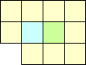 |
| {1,1,1,1,11+}, {1,1,2+,10+}, {2,2+,10+}, {1,3+,9+} |  |
| {6+,6+,11+,11+} | 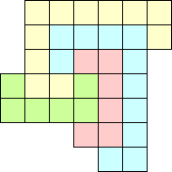 |
| {12+,12+,12+,...} | 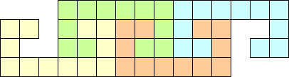 |
An { a1, a2, ... an } entanglement is a set of polyominoes with areas a1, a2, ... an which are entangled. Thus, the above figure is an {3,8} entanglement. What other entanglements exist?
| {1,7+} | 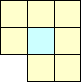 |
| {2+,8+} | 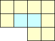 |
| {2+,8+,8+} | 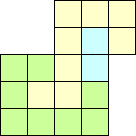 |
| {2+,8+,8+,8+} | 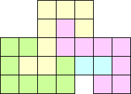 |
| {1,8+,8+,8+,8+} | 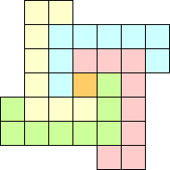 |
| {6+,8+,8+,8+,8+} | 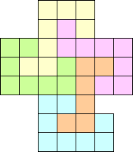 |
| {6+,8+,8+,8+,8+,8+} | 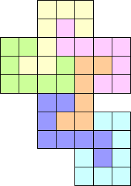 |
| {6+,8+,8+,8+,8+,8+,8+} | 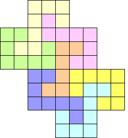 |
Joseph DeVincentis also found these entanglements using larger polyominoes:
| {1,1,9+} | 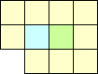 |
| {1,1,1,1,11+}, {1,1,2+,10+}, {2,2+,10+}, {1,3+,9+} | |
| {6+,6+,11+,11+} | 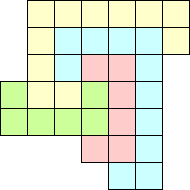 |
| {12+,12+,12+,...} | 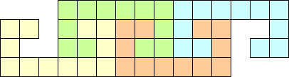 |
He also notes that to surround N2 units worth of hole, you need either a (4N+3)-omino, a (2N+1)-omino and a (2N+7)-omino, or four (N+7)-ominoes.
Joseph Babcock found that any number of 11-ominoes can be entangled:
Claudio Baiocchi found a {2+,8+,9+,9+,9+,...} entanglement shown below:
Berend Jan van der Zwaag found the {2,8+,8+,8+,8+...} entanglement below, answering a question of Joseph DeVincentis who asked whether arbitrarily many octominoes could be entangled. This can be modified to give a {1,7,8+,8+,8+,8+...} entanglement or a {2,7,9,8+,8+,8+} entanglement.
Berend Jan van der Zwaag showed that with a little help, arbitrarily many hexominoes could be entangled in a {3+,9+,6+,6+,6+,...} entanglement:
He also found this {7,7,7,9,9+,9+,9+,9+} entanglement:
Jeremy Galvagni found a extendable configuration which he calls borromean, since the removal of any polyomino disconnects them all:
Zoltan Nemeth completely classified the entanglements using two polyominoes.
I found the {1,2,3,4,5,6,7,8,9,10} entanglement below.
I thought that no {1,2,3,...,n} entanglement existed for n<10. But then Berend Jan van der Zwaag sent me the following {1,2,3,4,5,6,7,8,9} entanglement.
Sasha Ravsky proved that no {1,2,3,4,5,6} entanglement exists.
Guenter found a 12-omino that tiles the plane in an entangled way, but thought that 10 copies are needed to be entangled:
Joseph DeVincentis recently discovered these entanglements, one of which shows that {1,7} is not the only entanglement that only uses polyominoes of area 7 or less. These are the entanglements {5,7+,7+,7+,7+}, {1,1,3,7,8+,8+,8+,8+}, {7+,7+,7+,7+,8}, and {5+,5+,5+,5+,7+,7+,7+,7+,8}.
Even more recently, Joseph DeVincentis discovered entanglements using only area 6 or less. These are the entanglements {2,2,2,2,4,5+,5+,5+,5+,6,6,6,6,6+,6+,6+,6+,6+,6+,6+,6+} and {4+,4+,4+,4+,5,5+,5+,5+,5+,6,6,6,6,6+,6+,6+,6+}.

Berend Jan van der Zwaag discovered arbitrarily large entanglements using only 4 hexominoes and lots of smaller polyominoes:

Sasha Ravsky tried to prove that all entanglements contain an n-omino with n≥6, but Boris Bukh found an error in the proof.